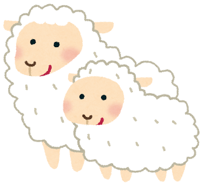

A SHEPHERD-BOY, who watched a flock of sheep near a village, brought out the villagers three or four times by crying out, "Wolf! Wolf!" and when his neighbors came to help him, laughed at them for their pains.

The Wolf, however, did truly come at last. The Shepherd-boy, now really alarmed, shouted in an agony of terror: "Pray, do come and help me; the Wolf is killing the sheep"; but no one paid any heed to his cries, nor rendered any assistance.
The Wolf, having no cause of fear, at his leisure lacerated or destroyed the whole flock. There is no believing a liar, even when he speaks the truth.
Image from Irasutoya/Fable from Aesop's Fables